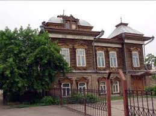

Атбасар
Атбасар - исторически известен как районный центр зернового региона.
Население: около 25 - 30 тыс человек
Основан: в 19 веке как административный и торговый центр района.
История
Абасар - Город стоит на равнинной степной местности с небольшими лесными массивами.Исторически — центр сельского хозяйства и животноводства.В советское время Атбасар развивался как районный центр с небольшими промышленными предприятиями.
Достопримечательности
-

Историко-краеведческий музей Атбасара - Главная культурная точка города.
Культура
Праздник Наурыз — национальные игры, концерты, ярмарки. Районные фестивали урожая — демонстрация сельскохозяйственной продукции, ремесел и традиций.
Интересные факты
- Благодаря близости к железнодорожной линии город связан с крупными городами Казахстана.